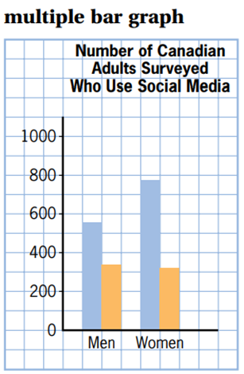
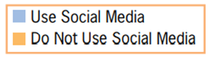
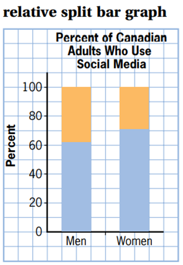

different quantities are represented by different colours and lengths of bars that are placed side by side


different quantities are represented by different colours and lengths of bars that are placed one above the other
different percents, totalling 100, are represented by different colours and lengths of bars that are placed one above the other.

It is important that the data gathered are both reliable and valid.
Reliable Data
• results of a study that can be duplicated in another study
• repetition of trials will produce more accurate data
Valid Data
• results that accurately represent the entire population